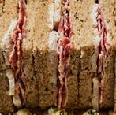

Chicken & Beechwood Smoked Bacon
Click the image to return to the sandwich selection.
Ingredients
Malted Bread (Wheat Flour (Wheat Flour, Calcium Carbonate, Folic Acid, Iron, Niacin, Thiamin), Water, Malted Wheat Flakes, Wheat Bran, Malted Barley Flour, Yeast, Salt, Wheat Gluten, Emulsifiers: Mono- and Diglycerides of Fatty Acids, Mono- and Diacetyl Tartaric Acid Esters of Mono- and Diglycerides of Fatty Acids; Malted Wheat Flour, Rapeseed Oil, Flour Treatment Agent: Ascorbic Acid; Wheat Flour, Wheat Starch), Cooked Chicken Breast (27%) (Chicken Breast, Rice Starch, Salt), Black Pepper Mayonnaise (Water, Rapeseed Oil, Cornflour, Spirit Vinegar, Pasteurised Egg Yolk, Black Pepper, Concentrated Lemon Juice, Sugar, White Wine Vinegar, Salt, Mustard Seed), Beechwood Smoked Streaky Bacon (11%) (Pork Belly, Sugar, Salt, Antioxidant: Sodium Ascorbate; Preservative: Sodium Nitrite).